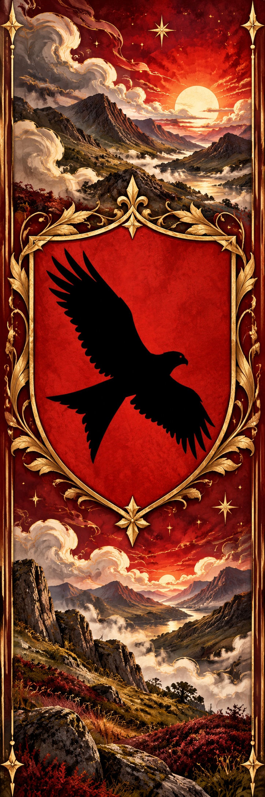
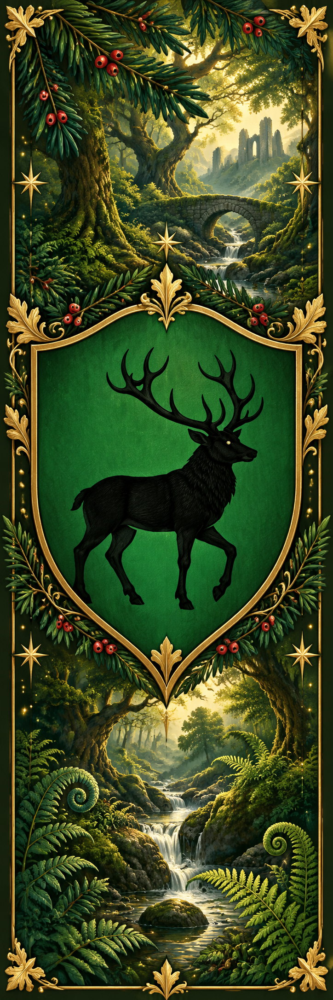
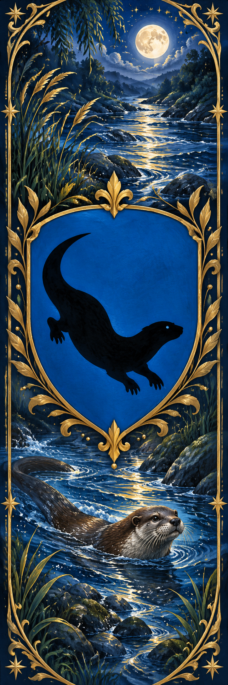
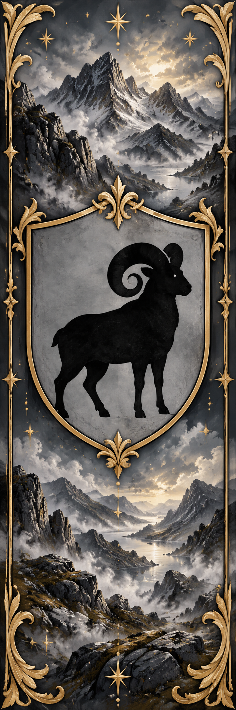
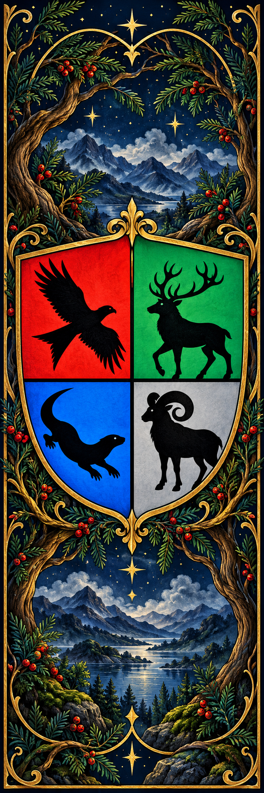
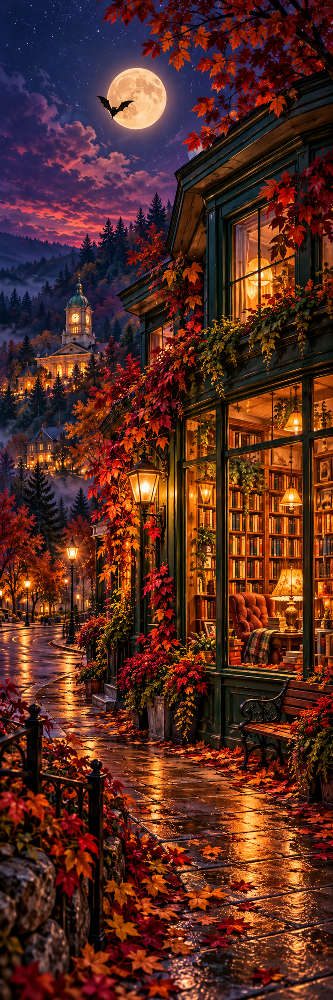
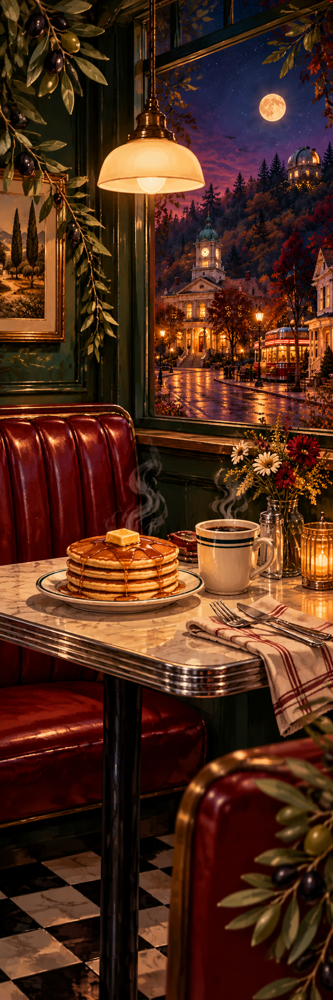
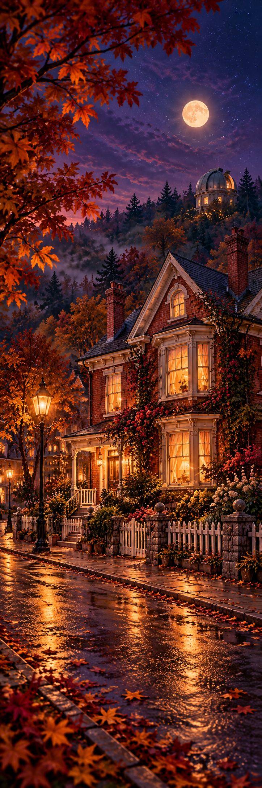

What Lies Beyond the Yew
A moonlit blue mountain valley, the school and three young silhouettes.
Download imageLITTLE KEEPSAKES FOR YOUR NEXT CHAPTER
Eleven illustrated bookmarks, from the Welsh mountains of Mynydd Draig to the welcoming streets of Cedar Hollow. Choose your favourites, save the artwork or print a little collection.
Each bookmark prints at 5 × 15 cm. Use A4 paper at actual size (100%), turn off browser headers and footers, then cut around the edges.
11 bookmarks selected.
THE COLLECTION
Familiar artwork, with the lettering removed and the scenes reimagined for a bookmark.
A moonlit blue mountain valley, the school and three young silhouettes.
Download image
A welcoming house, amber windows and bats in a purple evening sky.
Download image
A glowing house beneath a witch flying across the moon.
Download imageTHE COLLECTION
Four house designs and one bringing all four together beneath the school crest.

The red kite, crimson skies and courage.
Download image
The stag, green woodland and wisdom.
Download image
The otter, blue rivers and curiosity.
Download image
The ram, silver mountains and strength.
Download image
Red kite, stag, otter and ram united in one school crest.
Download imageTHE COLLECTION
A bookshop window, your favourite booth and a street that feels like home.

Warm lamplight, shelves of stories and a little nocturnal company.
Download image
Pancakes, coffee and a cosy red diner booth.
Download image
A red-brick house, autumn leaves and welcoming windows.
Download image